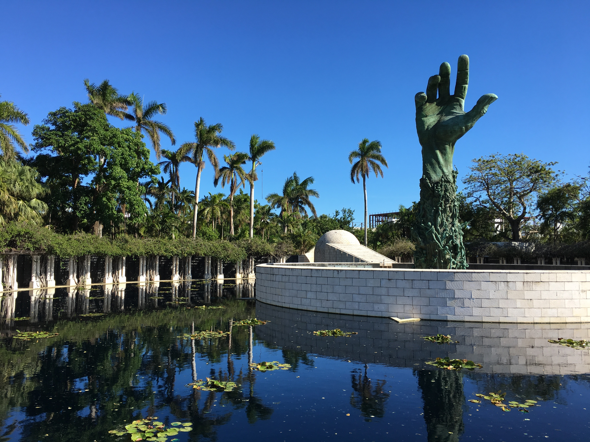
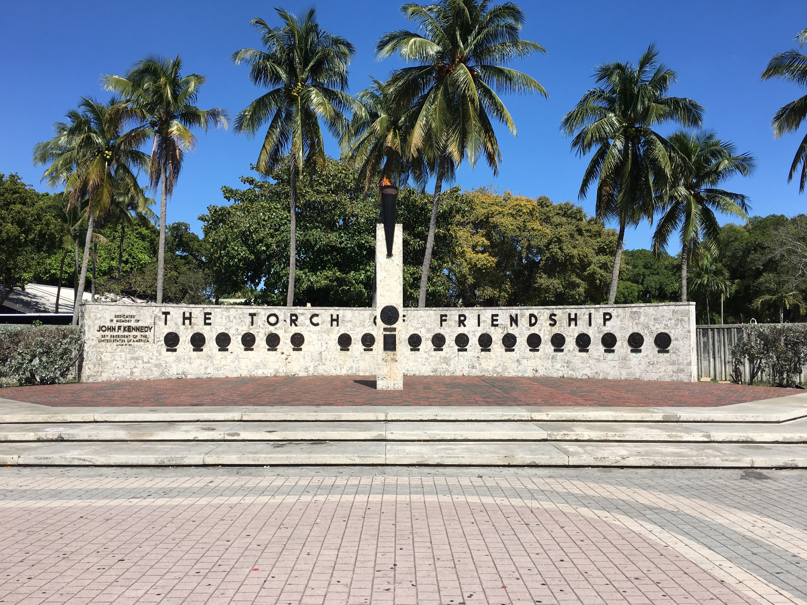
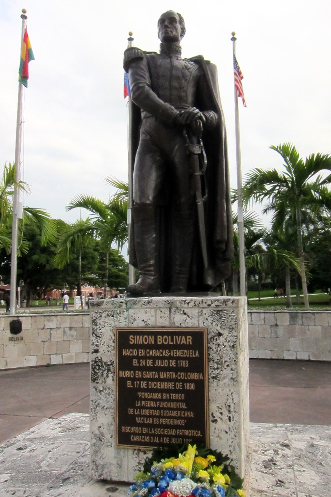

Miami, Florida - USA
Rubén Villar
13/10/2022
The most striking part of the Miami Holocaust Monument is a 13 metre bronze hand, over which clamber hundreds of tormented human shapes. The figures are carefully sculpted, and in their detail powerfully transmit the despair and anguish of the subject matter.
The monument also includes a dark stone tunnel, with the names of the concentration camps carved into the walls, as a representation of the solitude and isolation the Jews felt during their persecution.
An enormous wall nearby also bears the names of the millions of victims to have died during the atrocity.
Holocaust monument - Photo taken by Phillip Pessar under the Creative Commons license.
The Torch of Friendship is a monument built in 1960 located at the northwest corner of Bayfront Park in Downtown Miami.
The Torch of Friendship was built to signify the passageway for immigrants coming from Latin America and the Caribbean. The gas fed flame was meant to act as a welcoming beacon for all new and old immigrants to the nation. In 1964 it was re-dedicated to the memory of President John F. Kennedy.
It consists of a pillar, covered with stone plates and topped by a burning torch. It holds a plate with the Great Seal of the United States at the front. Underneath a plate holds a caption in which the city of Miami dedicates this monument to the friendship between the US and the Latin American countries. It also has the year of construction, 1960.
The pilar is escorted by a curved wall in which appears the re-dedication of the monument, in memory of John F. Kennedy. To its right, the words TORCH OF FRIENDSHIP appear above 20 round plates showing the coat of arms and names of Latin American countries.
The Torch of Friendship - Photo taken by Phillip Pessar under the Creative Commons license.
The statue of Simón Bolívar was dedicated in Bayfront Park on December 17, 1984.
It watextarea>s a gift from the government of Venezuela in 1979 and was stored in a Miami warehouse for several years before being dedicated. After the redevelopment of the park the bronze figure was renovated and rededicated in 1991 in the northern end of the park alongside the Torch of Friendship.
Simón Bolívar Statue - Photo taken by Wally Gobetz under the Creative Commons license.
Copyright